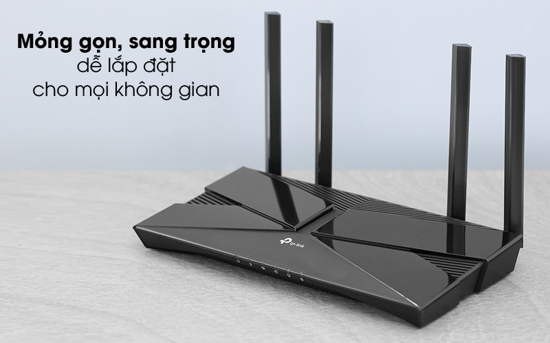

Trang bị chuẩn Wi-Fi 6 tốc độ ấn tượng đến 1.5 Mbps. Trong đó, đạt tốc độ 1201 Mbps trên băng tần 5GHz, 300 Mbps trên băng tần 2.4GHz đảm bảo cho những kết nối nhanh, mượt mà và ổn định, trên nhiều thiết bị cùng sử dụng. Với Archer AX10, bạn dễ dàng chơi game trực tuyến, video call chất lượng cao, tải video 4K hay xem phim HD online mà không lo đứng mạng, rớt mạng cả khi chia sẻ đường truyền với nhiều thiết bị khác.
4 ăngten 5 dBi cho vùng phủ sóng rộng, bao phủ khắp không gian ngôi nhà bạn. Và dưới sự hỗ trợ của Beamforming, ở bất kỳ thời điểm nào và vị trí nào trong vùng phủ sóng, các thiết bị đều được kết nối nhanh với đường truyền tốt, nhờ khả năng tập trung cường độ tín hiệu không dây về thiết bị truy cập của Beamforming.
Độ vững tốt để bạn sử dụng trên các mặt bàn, kệ tủ hay có thể thiết kế treo tường cho router. Thiết kế với vỏ nhựa cứng cáp, sáng bóng, màu đen sang trọng nên thiết bị mạng này rất dễ lau chùi, làm sạch, duy trì độ mới.
Router CPU 3 nhân 1.5GHz mạnh mẽ được OFDMA và MU-MIMO phát huy tối ưu hiệu năng, cho phép số lượng lên đến 30 - 40 user truy cập đồng thời vào hệ thống mạng mà không làm tăng độ trễ hay giảm tốc độ đường truyền, thoải mái lướt web, chơi game, nghe nhạc...
Kết nối có dây của Archer AX10 cũng đạt tốc độ dữ liệu Gigabit lên đến 1000 Mbps để bạn giải trí, làm việc hiệu quả trên PC, laptop hay tivi thông minh của gia đình, văn phòng...
Tải Tether cho điện thoại và thực hiện các bước cài đặt cho TP-Link Archer AX10, điều chỉnh các tính năng. Đồng thời, có thể điều khiển router qua giọng nói với trợ lý ảo Amazon Alexa, với các lệnh điều khiển cơ bản, thêm tiện ích cho nhịp sống thời công nghệ.
Tốc độ:
Băng tần:
Số ăng-ten:
Truy cập tối đa:
Mật độ phủ sóng (bán kính):
Nút bấm hỗ trợ:
Thương hiệu của:
Sản xuất tại:
Hãng